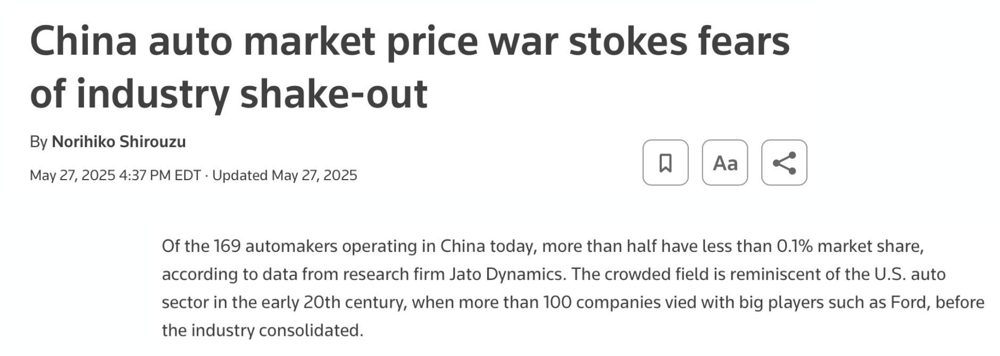

RSC Economics Experience · July 2026
Meng Hsuan “Rex” Hsieh
Press → to begin
Agenda for Today
Part 1 · Recap
Press ↓ to recap Class 3
Class 3 Recap · Marginal Revenue
Marginal revenue (MR) is the extra revenue from selling one more unit. A single-price seller facing downward-sloping demand must lower the price on every unit — so MR falls below the price:
Class 3 Recap · Marginal Revenue
Class 3 Recap · Monopoly Pricing
A monopolist faces the whole market demand and chooses quantity first, then price, using the rule \( MR = MC \):
Part 2
Press ↓ to study competitive markets
Perfect Competition · Structure
Key features of a perfectly competitive environment:
Perfect Competition · Definition
Real-world examples:
Perfect Competition · Real World
Few real-life examples come close to perfectly competitive markets, but some are somewhat close:

Perfect Competition · Implications
Three direct consequences of perfect competition:
Perfect Competition · Implications
Question to consider:
What do A. and B. imply about the marginal revenue (MR) of a firm in a perfectly competitive market?
Perfect Competition · Implications
Question to consider:
What does A., B., and C. imply about the market demand versus the demand the individual firm faces?
Perfect Competition · Graph
The market's supply and demand set the price \( P^* \); each small firm takes \( P^* \) as given, so the demand it faces is flat. Press →.
Perfect Competition · Summary
Therefore, perfectly competitive markets are characterized by:
Market Equilibrium · Supply
Firms choose quantity where \( MR = MC \). Since \( MR = P \), this means competitive firms choose quantity where:
Does the MC curve fully represent the firm's supply decision?
Market Equilibrium · Profits
For an operating firm, \(\Pi=(P-ATC)q\). First find the quantity where P meets rising MC.
Perfect Competition · Step by Step
Press → to add each element of the graph
Perfect Competition · Step by Step
Press → to add each element of the graph
Part 3
Press ↓ to continue
Short-Run Equilibrium · Definition
At least one input is fixed. We hold the number of firms fixed while existing firms choose output.
A firm may shut down temporarily, producing zero while still owing unavoidable fixed costs.
The operating decision compares revenue with avoidable costs. Fixed costs still count when calculating profit.
Short-Run Equilibrium · Supply
The Shutdown Rule:
Short-Run Equilibrium · Dynamics
Market Adjustments:
Why might new firms enter, and existing firms exit, if everyone takes the market price as given?
Short-Run Equilibrium · Entry/Exit
Adjustment toward the long run:
Short-Run Equilibrium · Profits Graph
The firm (left) earns short-run profit since \( P > ATC \). New firms then enter, market (right) supply shifts right, and the price falls back to \( \min(ATC) \) where profit \( = 0 \). Press →.
Short-Run Equilibrium · Loss Graph
At \( P^* \) the firm (left) makes a loss because \( P < ATC \). Firms exit, so market (right) supply shifts left and the price rises back toward zero profit. Press →.
Long-Run Equilibrium · Definition
All inputs can be adjusted, and firms can enter or exit. Costs that were fixed in the short run can now be avoided or changed.
Zero economic profit covers all economic costs, including the owner’s next-best use of time and capital.
Long-Run Equilibrium · Price
With identical firms and unchanged input prices, free entry drives the price down to \( P^* = \min(ATC) \), where every firm earns exactly zero economic profit. (Market on the right; representative firm on the left.)
Perfect Competition · Recap
The Firm's Profit-Maximizing Quantity:
Perfect Competition · Recap
Can a firm rationally stay open while losing money? Explain using avoidable costs.
Part 4
Press ↓ for a quick, intuitive preview
Welfare · Intuition
Why care about market structure? It shapes how well-off people and firms are.
Welfare · Efficiency & DWL
Schedule
Please stay on top of everything!
See you next Monday (9am sharp)!
Come to office hours w/ any questions/concerns.
Thank you!